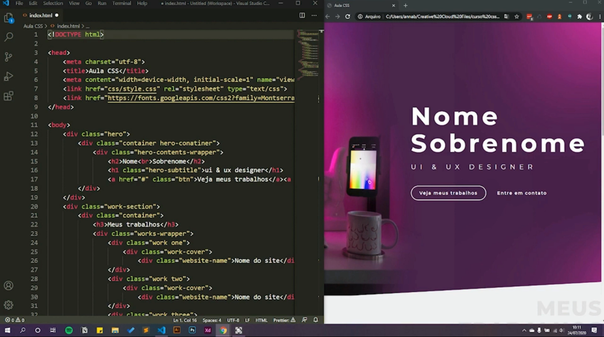

Esta etapa tem como objetivo fornecer conceitos que lhe ajudarão a personalizar seus sites ou montar fielmente um layout apresentado por um(a) designer. O propósito deste módulo é fazer com que você entenda como o CSS age sobre/interage com um documento HTML, não será focado a parte de “decoreba”, que são facilmente encontrados em sites e documentações, mas sim a lógica por trás do funcionamento de um arquivo CSS e algumas de suas principais propriedades (seletores, pseudo-seletores, atributos como flex-box, posicionamento) de uma forma que o site fique ao máximo responsivo e adaptável à diversas telas. A partir disso, você conseguirá seguir com seus estudos em CSS mais profundamente, pois terá compreendido a base de seu funcionamento.
Beleza! Mas o que é afinal CSS?
Para começar, CSS significa Cascading Style Sheet e é uma linguagem de estilos usada para estilizar elementos de uma página desenvolvida com uma linguagem de marcação, como o HTML. A expressão cascata da nomenclatura indica que é possível usar mais de um arquivo CSS ao mesmo tempo para criar o estilo visual de um site. É o CSS que estipula o visual dele, incluindo elementos como tamanho da fonte, imagens de fundo e estilo de cores. Vamos ver como ele funciona…
